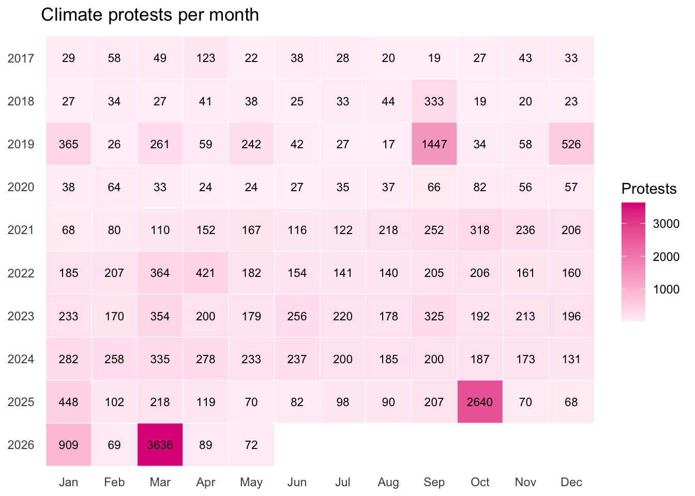
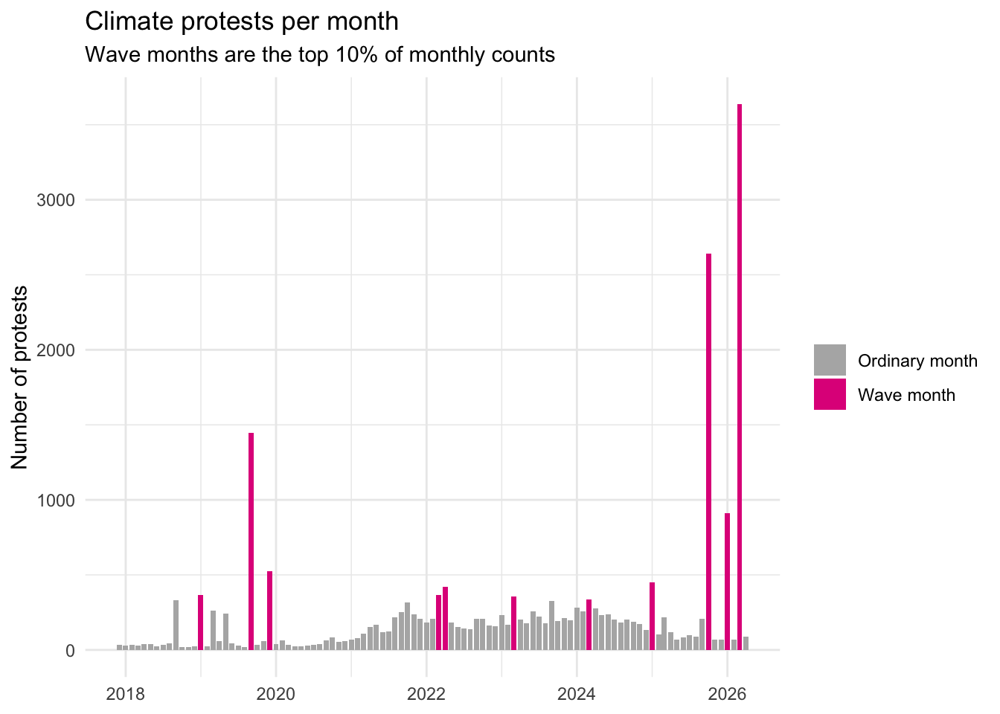
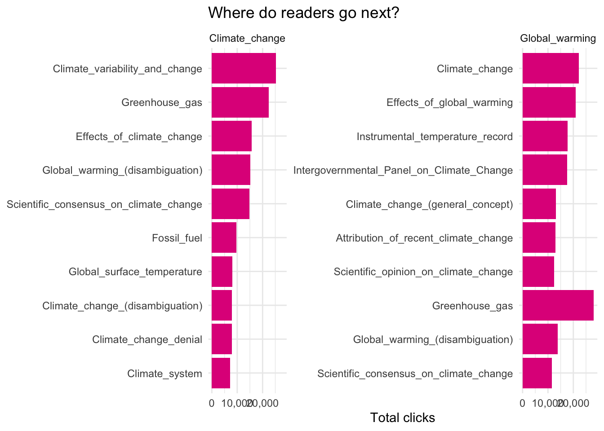
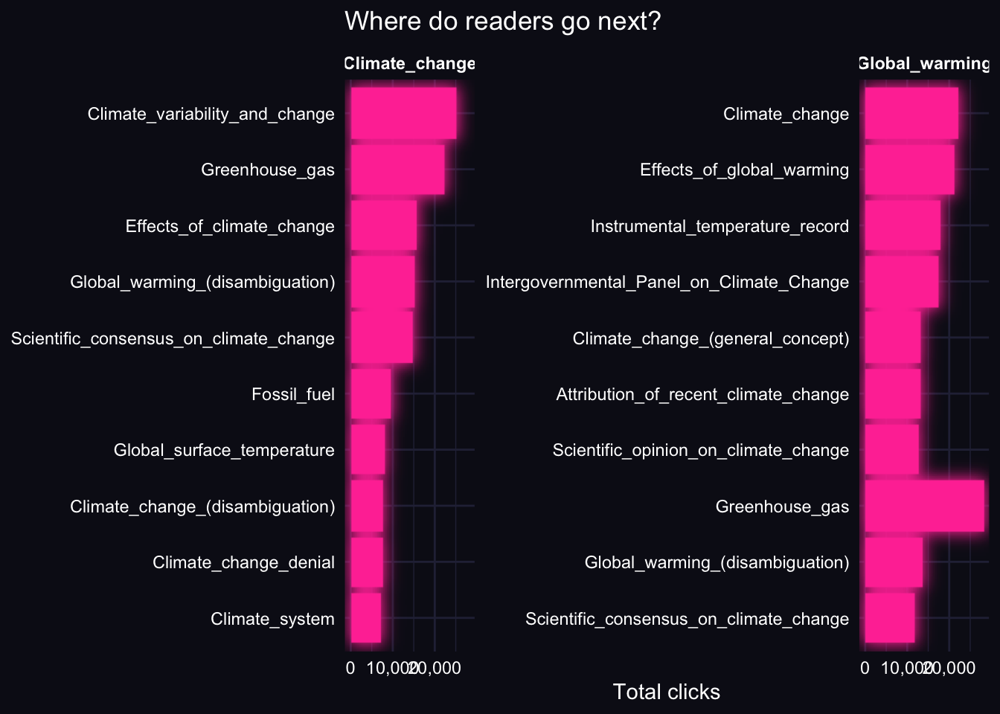
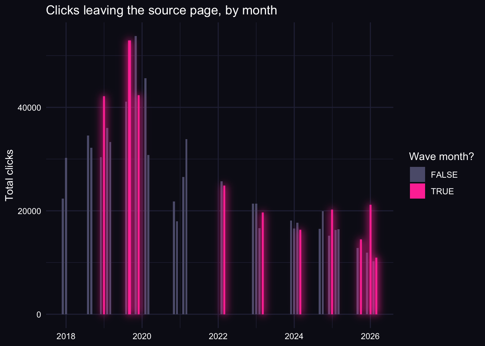

── Attaching core tidyverse packages ──────────────────────── tidyverse 2.0.0 ──
✔ dplyr 1.2.1 ✔ readr 2.2.0
✔ forcats 1.0.1 ✔ stringr 1.6.0
✔ ggplot2 4.0.3 ✔ tibble 3.3.1
✔ lubridate 1.9.5 ✔ tidyr 1.3.2
✔ purrr 1.2.2
── Conflicts ────────────────────────────────────────── tidyverse_conflicts() ──
✖ dplyr::filter() masks stats::filter()
✖ dplyr::lag() masks stats::lag()
ℹ Use the conflicted package (<http://conflicted.r-lib.org/>) to force all conflicts to become errorsMilestoneTwo
For Milestone #2, I want to communicate where the culmination of my weekly output has gotten me. At this point, I have identified my protest waves, downloaded and cleaned my wikipedia data, and began to do some exploratory data analysis on the relationships between the protest waves and the wikipedia clickstream. Before we start, I wanted to flag that my last graphs use the package ggfx(see my read me). If ggfx is not installed, the notebook still renders and those graphs are drawn normally. You will see why I wanted it! :)
Reading in Protest Data
The CCC data comes in three time periods, so the first step was to combine them all.
This is the cleaning code for the CCC protest data. It reads all three files, stacks them, and builds one topic column.
# find the three CCC files
ccc_files <- list.files("data/raw/ccc", pattern = "\\.csv(\\.gz)?$", full.names = TRUE)
ccc_files[1] "data/raw/ccc/ccc_compiled_20172020.csv"
[2] "data/raw/ccc/ccc_compiled_20212024.csv.gz"
[3] "data/raw/ccc/ccc-phase3-public.csv" # read every file as text, lower-case the column names, and stack them
ccc_raw <- ccc_files |>
map(\(f) read_csv(f, col_types = cols(.default = col_character())) |>
rename_with(tolower)) |>
bind_rows()
nrow(ccc_raw) # number of protest events[1] 275151ncol(ccc_raw) # number of columns[1] 114ccc_raw |>
select(date, locality, state, issues, issue_tags) |>
head()# A tibble: 6 × 5
date locality state issues issue_tags
<chr> <chr> <chr> <chr> <chr>
1 2017-01-01 Washington DC military <NA>
2 2017-01-01 Mankato MN military <NA>
3 2017-01-01 Minneapolis MN banking and finance; economy; ener… <NA>
4 2017-01-01 Little Compton RI environment; guns; military <NA>
5 2017-01-01 Oak Ridge TN military <NA>
6 2017-01-02 Washington DC military <NA> # At this point, I realized that the different time periods of data collection named a column measuring the same thing different names. At time of writing this I am still annoyed about that :)
ccc_raw |>
summarise(
issues = sum(!is.na(issues)),
issue_tags = sum(!is.na(issue_tags)),
tags_summary = sum(!is.na(issue_tags_summary)),
total_rows = n()
)# A tibble: 1 × 4
issues issue_tags tags_summary total_rows
<int> <int> <int> <int>
1 131060 137452 198532 275151# combine the three differently named columns into one "topic" column
# (coalesce takes the first non-missing value of the three)
ccc_raw <-
ccc_raw |>
mutate(topic = coalesce(issue_tags, issues, issue_tags_summary))
sum(is.na(ccc_raw$topic)) # events with no topic at all[1] 6639ccc_raw |> count(topic, sort = TRUE) |> head(20)# A tibble: 20 × 2
topic n
<chr> <int>
1 foreign affairs 23772
2 policing; racism 11820
3 military 11196
4 policing;racism 9671
5 immigration 7807
6 education; guns 7299
7 labor 7008
8 <NA> 6639
9 democracy;presidency 6163
10 presidency 5757
11 environment 5463
12 racism 4242
13 democracy;economy;education;environment;guns;healthcare;immigration;pr… 3564
14 religion;reproductive rights 3513
15 guns 3048
16 democracy 2962
17 healthcare;labor 2948
18 foreign affairs;military 2781
19 corruption;democracy;economy;education;environment;guns;healthcare;imm… 2507
20 lgbtqia 2466# keep only events tagged with environment or climate
# events with no topic at all are dropped implicitly here: str_detect() on NA
# returns NA, and filter() discards NA rows
climate <- ccc_raw |>
filter(str_detect(str_to_lower(topic), "environment|climate"))
nrow(climate)[1] 23773climate |> count(topic, sort = TRUE) |> head(15)# A tibble: 15 × 2
topic n
<chr> <int>
1 environment 5463
2 democracy;economy;education;environment;guns;healthcare;immigration;pr… 3564
3 corruption;democracy;economy;education;environment;guns;healthcare;imm… 2507
4 democracy;economy;environment;healthcare;housing;immigration;labor and… 836
5 development;environment;policing;racism 741
6 banking and finance;energy;environment 627
7 energy;environment 540
8 energy;environment;indigenous peoples 361
9 banking and finance;economy;energy;environment 360
10 development;energy;environment 359
11 energy; environment 352
12 civil rights; disability rights; economy; environment; immigration; la… 332
13 development; economy; energy; environment; indigenous peoples; labor; … 293
14 environment;indigenous peoples 225
15 civil rights;economy;environment;guns;immigration;labor and workers ri… 219At this point, I realized there were some events that were untagged. We will now do a test to interrogate the distribution of untagged events.
# how many untagged events are there in each year?
ccc_raw |>
filter(is.na(topic)) |>
mutate(year = str_sub(date, 1, 4)) |>
count(year)# A tibble: 10 × 2
year n
<chr> <int>
1 2017 1081
2 2018 1530
3 2019 567
4 2020 409
5 2021 594
6 2022 616
7 2023 545
8 2024 616
9 2025 442
10 2026 239untagged_share <- mean(is.na(ccc_raw$topic))
untagged_share[1] 0.02412857The untagged events (2.4%) show up in every year, although more of them are in 2017 and 2018 than in later years. Because they are such a small share of the data, I make the choice to drop them.
We now count how many climate/environmental protests happened in each month. As a reminder, we are looking at all of the data to find months in the top 10% of monthly protest counts. We will use these to build protest waves.
# the dates come in two formats, so try year-month-day first, then month-day-year
# then round each date down to the first day of its month
climate <-
climate |>
mutate(
date = as_date(parse_date_time(date, orders = c("ymd", "mdy"))),
month = floor_date(date, "month")
)
nrow(climate)[1] 23773range(climate$date, na.rm = TRUE)[1] "2017-01-01" "2026-05-31"sum(is.na(climate$date)) # dates that failed to parse[1] 0# number of climate protests per month
monthly <-
climate |>
count(month, name = "protests")
monthly |> arrange(month)# A tibble: 113 × 2
month protests
<date> <int>
1 2017-01-01 29
2 2017-02-01 58
3 2017-03-01 49
4 2017-04-01 123
5 2017-05-01 22
6 2017-06-01 38
7 2017-07-01 28
8 2017-08-01 20
9 2017-09-01 19
10 2017-10-01 27
# ℹ 103 more rows#TEST 1: CCC data loaded and parsed
stopifnot(
"expected 3 CCC files" = length(ccc_files) == 3,
"key columns are missing" = all(c("date", "locality", "state", "issues") %in% names(ccc_raw)),
"5% or more events are untagged" = untagged_share < 0.05,
"1% or more dates failed to parse" = mean(is.na(climate$date)) < 0.01
)Yay! Now we can visualize our data. Previously, I tried histograms and bar graphs, but found this data best visualized in a heat map. Lets take a look at that process.
First, I did a heat map with no modifications.

This heat map does not have enough contrast to be readable. This is due to the strong outlier months. I decided to set a cap on the colour range at the 90th percentile.
climate |>
count(month, name = "protests") |>
pull(protests) |>
quantile(c(.1, .25, .5, .75, .9, .95, 1)) 10% 25% 50% 75% 90% 95% 100%
27.0 41.0 122.0 213.0 331.4 431.8 3636.0 Half of our months have 122 protest or fewer, 90% are under 331, but the upper percentile has 3636!! Lets try setting the cap at the 90th percentile. This means the top 10% will get the darkest pink, and everything else should be more visible on the heat map.
cap <- 350
climate |>
count(month, name = "protests") |>
mutate(
year = factor(year(month)),
mon = month(month, label = TRUE)
) |>
ggplot(aes(x = mon, y = fct_rev(year), fill = protests)) +
geom_tile(color = "white") +
geom_text(aes(label = protests), size = 3) +
scale_fill_gradientn(
colors = c("#FFF5F9", "#FAC4DA", "#F27BAE", "#E0218A", "#C2185B"),
limits = c(0, cap),
oob = scales::squish,
breaks = c(0, 100, 200, 300, 350),
labels = c("0", "100", "200", "300", "350+"),
name = "Protests"
) +
labs(x = NULL, y = NULL, title = "Climate protests per month") +
theme_minimal() +
theme(panel.grid = element_blank())
This whole situation made me realize I need to make a choice about my outliers. The outlier months are typically months with a large amount of multi-tagged protest - for example,
climate |>
select(date, issues) |>
filter(
year(date) == 2026,
month(date) == 3,
str_count(issues, "\\w+") > 10
) |>
head()# A tibble: 6 × 2
date issues
<date> <chr>
1 2026-03-07 corruption;democracy;education;energy;environment;foreign affairs;…
2 2026-03-14 corruption;democracy;education;energy;environment;foreign affairs;…
3 2026-03-21 corruption;democracy;education;energy;environment;foreign affairs;…
4 2026-03-25 economy;energy;environment;foreign affairs;labor and workers right…
5 2026-03-28 democracy;economy;education;environment;guns;healthcare;housing;im…
6 2026-03-28 democracy;economy;education;environment;guns;healthcare;immigratio…Check out all of these events from March of 2026. They all have over ten tags! Cultural context tells us that this is the month that the No Kings protests came to a head, as well as major demonstrations triggered by US attacks on Iran.
I came to the conclusion that I will not filter out these large protests; in short, climate change is not separate from the instituions that enabled unevenly distributed environmental harms in the first place, so the multifaceted protests may even aid my analysis by including that complexity outright.
Next step: Identify protest waves
The Clickstream data starts in late 2017, so my study window begins in December 2017. The last month of CCC data (May 2026) is only partly covered, so the window ends at the last full month. Every month in the window has at least one protest, so no months needed to be filled in as zero. A protest wave is a month in the top 10% of monthly counts.
#clickstream data needs two months to form a pair so we start in december 2017
study_start <- ymd("2017-12-01")
# the ccc dataset is incomplete for may 2026 so we are going to go back one month from the last recorded month (may 2026) to ensure we only use full months
study_end <- floor_date(max(climate$date, na.rm = TRUE), "month") %m-% months(1)
study_end[1] "2026-04-01"monthly_window <- monthly |>
filter(month >= study_start, month <= study_end)
nrow(monthly_window)[1] 101wave_cutoff <- quantile(monthly_window$protests, 0.90)
wave_cutoff90%
335 # a wave month is any month at or above the 90th percentile
monthly_window <- monthly_window |>
mutate(wave = protests >= wave_cutoff)
monthly_window |> count(wave)# A tibble: 2 × 2
wave n
<lgl> <int>
1 FALSE 90
2 TRUE 11# full list of wave months (print(n = Inf) shows every row)
monthly_window |> filter(wave) |> select(month, protests) |> print(n = Inf)# A tibble: 11 × 2
month protests
<date> <int>
1 2019-01-01 365
2 2019-09-01 1447
3 2019-12-01 526
4 2022-03-01 364
5 2022-04-01 421
6 2023-03-01 354
7 2024-03-01 335
8 2025-01-01 448
9 2025-10-01 2640
10 2026-01-01 909
11 2026-03-01 3636# build the before/after pairs
month_pairs <- monthly_window |>
mutate(
before_month = lag(month),
before_protests = lag(protests),
before_is_wave = lag(wave)
) |>
filter(!is.na(before_month)) |> # drops Dec 2017, which only serves as a "before"
transmute(
before_month,
after_month = month,
before_protests,
after_protests = protests,
before_is_wave,
pair_type = if_else(wave, "wave", "ordinary")
)
count(month_pairs, pair_type)# A tibble: 2 × 2
pair_type n
<chr> <int>
1 ordinary 89
2 wave 11month_pairs |> filter(pair_type == "wave") |> count(before_is_wave)# A tibble: 2 × 2
before_is_wave n
<lgl> <int>
1 FALSE 10
2 TRUE 1# TEST 2: study window is complete and gap-free
expected_months <- seq(study_start, study_end, by = "month")
stopifnot(
"window does not end Apr 2026" = study_end == ymd("2026-04-01"),
"window has the wrong number of months" = nrow(monthly_window) == length(expected_months),
"window has a missing month" = all(monthly_window$month == expected_months),
"window has a zero-protest month" = all(monthly_window$protests >= 1)
)Here is a first exploratory graph of the protest data: climate protests per month, with the wave months highlighted.
monthly_window |>
ggplot(aes(month, protests, fill = wave)) +
geom_col() +
scale_fill_manual(
values = c("grey70", "#E0218A"),
labels = c("Ordinary month", "Wave month"),
name = NULL
) +
labs(
x = NULL, y = "Number of protests",
title = "Climate protests per month",
subtitle = "Wave months are the top 10% of monthly counts"
) +
theme_minimal()
We have now identified the “wave” months. Some notes:
- 11 total wave months, with a cutoff of 335 protests per month
- There is only one back to back wave (March and April 2022), meaning we have 10 “ordinary” pairs
- 4 of the 11 waves are in March, which signals to me that I investigate this pattern (seasonal/spring mobilizations?)
- 3 of the 11 months are in January, same question as above
- I also want to check if the CCC’s tagging changed over time, as the most extreme waves are also quite recent. This could be because of the political events we spoke about earlier, but I want to make sure it is not an obvious data effect.
# A tibble: 2 × 2
pair_type n
<chr> <int>
1 ordinary 89
2 wave 11| Wave month | Month before | Protests before | Protests in wave | Change |
|---|---|---|---|---|
| Jan 2019 | Dec 2018 | 23 | 365 | 342 |
| Sep 2019 | Aug 2019 | 17 | 1,447 | 1,430 |
| Dec 2019 | Nov 2019 | 58 | 526 | 468 |
| Mar 2022 | Feb 2022 | 207 | 364 | 157 |
| Apr 2022 | Mar 2022 | 364 | 421 | 57 |
| Mar 2023 | Feb 2023 | 170 | 354 | 184 |
| Mar 2024 | Feb 2024 | 258 | 335 | 77 |
| Jan 2025 | Dec 2024 | 131 | 448 | 317 |
| Oct 2025 | Sep 2025 | 207 | 2,640 | 2,433 |
| Jan 2026 | Dec 2025 | 68 | 909 | 841 |
| Mar 2026 | Feb 2026 | 69 | 3,636 | 3,567 |
Now we are going to pick our non-wave pairs. I have decided to pick these based on similar seasonality to the wave pairs, as the data visualization has showed trends that indicate the time of year impacts the number of climate-related protests.
A wave pair is meant to compare a baseline month with a wave month. One of my 11 wave pairs doesn’t have a baseline: April 2022 is a wave month, but the month before it, March 2022, is also a wave month. Wikipedia attention in March 2022 may already be elevated by the same protest activity, so the “before” month isn’t a clean comparison. I dropped this pair, which leaves 10 wave pairs. March 2022 is still included as a wave month in its own pair (February to March 2022), so this stretch of heightened protest activity is still represented. I’ll match 10 non-wave pairs to these 10 wave pairs.
# A tibble: 11 × 3
wave_after match_before match_after
<date> <date> <date>
1 2019-01-01 2017-12-01 2018-01-01
2 2019-09-01 2018-08-01 2018-09-01
3 2019-12-01 2020-11-01 2020-12-01
4 2022-03-01 2021-02-01 2021-03-01
5 2022-04-01 2021-03-01 2021-04-01
6 2023-03-01 2025-02-01 2025-03-01
7 2024-03-01 2020-02-01 2020-03-01
8 2025-01-01 2023-12-01 2024-01-01
9 2025-10-01 2024-09-01 2024-10-01
10 2026-01-01 2022-12-01 2023-01-01
11 2026-03-01 2019-02-01 2019-03-01 # A tibble: 1 × 4
before_month after_month before_protests after_protests
<date> <date> <int> <int>
1 2022-03-01 2022-04-01 364 421[1] 10| Pair | Type | Before month | After month | Protests before | Protests after |
|---|---|---|---|---|---|
| 1 | Wave | Dec 2018 | Jan 2019 | 23 | 365 |
| 1 | Non-wave | Dec 2017 | Jan 2018 | 33 | 27 |
| 2 | Wave | Aug 2019 | Sep 2019 | 17 | 1,447 |
| 2 | Non-wave | Aug 2018 | Sep 2018 | 44 | 333 |
| 3 | Wave | Nov 2019 | Dec 2019 | 58 | 526 |
| 3 | Non-wave | Nov 2020 | Dec 2020 | 56 | 57 |
| 4 | Wave | Feb 2022 | Mar 2022 | 207 | 364 |
| 4 | Non-wave | Feb 2021 | Mar 2021 | 80 | 110 |
| 5 | Wave | Feb 2023 | Mar 2023 | 170 | 354 |
| 5 | Non-wave | Feb 2025 | Mar 2025 | 102 | 218 |
| 6 | Wave | Feb 2024 | Mar 2024 | 258 | 335 |
| 6 | Non-wave | Feb 2020 | Mar 2020 | 64 | 33 |
| 7 | Wave | Dec 2024 | Jan 2025 | 131 | 448 |
| 7 | Non-wave | Dec 2023 | Jan 2024 | 196 | 282 |
| 8 | Wave | Sep 2025 | Oct 2025 | 207 | 2,640 |
| 8 | Non-wave | Sep 2024 | Oct 2024 | 200 | 187 |
| 9 | Wave | Dec 2025 | Jan 2026 | 68 | 909 |
| 9 | Non-wave | Dec 2022 | Jan 2023 | 160 | 233 |
| 10 | Wave | Feb 2026 | Mar 2026 | 69 | 3,636 |
| 10 | Non-wave | Feb 2019 | Mar 2019 | 26 | 261 |
YAY!
Wikipedia Clickstream Data
Testing
Before I go ahead and download one million mb of clickstream data, lets download one month and test out our data cleaning. (This exploratory code is not run when the document renders, since it downloads a large file.)
dir.create("data/raw/clickstream", recursive = TRUE, showWarnings = FALSE)
options(timeout = 3600)
download.file(
"https://dumps.wikimedia.org/other/clickstream/2019-09/clickstream-enwiki-2019-09.tsv.gz",
destfile = "data/raw/clickstream/clickstream-enwiki-2019-09.tsv.gz",
mode = "wb"
)
file.size("data/raw/clickstream/clickstream-enwiki-2019-09.tsv.gz") / 1e6
read_tsv(
"data/raw/clickstream/clickstream-enwiki-2019-09.tsv.gz",
col_names = c("prev", "curr", "type", "n"),
col_types = "cccd",
n_max = 20,
quote = ""
)
climate_clicks <- read_tsv_chunked(
"data/raw/clickstream/clickstream-enwiki-2019-09.tsv.gz",
callback = DataFrameCallback$new(
function(x, pos) filter(x, prev == "Climate_change") # filter to show climate change homepage
),
chunk_size = 1e6,
col_names = c("prev", "curr", "type", "n"),
col_types = "cccd",
quote = ""
)
nrow(climate_clicks)
climate_clicks |> arrange(desc(n)) |> slice_head(n = 10)Climate_change sends 13,085 readers to the Global_warming, and this data is from 2019… what was the phenomenon of broad climatic pattern change due to anthropocentric influence called then? Was it more commonly known as “global warming?”
Yes! I have googled this query and a formal “requested move” discussion opened on the article’s discussion page to change the title from Global Warming to Climate Change. The official page move occured on August 21, 2020. Lets try that last chunk again, but filtering for Global_warming as the starting page.
Therefore, March 2020 wave and earlier will be Global_warming, Nov 2020 wave and after will be Climate_change.
gw_clicks <- read_tsv_chunked(
"data/raw/clickstream/clickstream-enwiki-2019-09.tsv.gz",
callback = DataFrameCallback$new(
function(x, pos) filter(x, prev == "Global_warming")
),
chunk_size = 1e6,
col_names = c("prev", "curr", "type", "n"),
col_types = "cccd",
quote = ""
)
nrow(gw_clicks)
gw_clicks |> arrange(desc(n)) |> slice_head(n = 10)This makes more sense! For the purposes of this project, I am going to direct from Global_Warming for anything before August 21, 2020, and from Climate_change after that date. I am sure this title change has an effect on the top ten destination pages, but I suppose all we can do is push on and see what the data looks like before making any more choices on that matter.
# every month we need clickstream data for: before and after of each wave and non-wave pair
needed_months <- bind_rows(wave_pairs, bind_rows(matches)) |>
select(before_month, after_month) |>
pivot_longer(everything(), values_to = "month") |>
distinct(month) |>
arrange(month) |>
mutate(
ym = format(month, "%Y-%m"),
# the page move happened Aug 21, 2020, so Aug 2020 is mixed (flagged below)
source_page = case_when(
month < ymd("2020-08-01") ~ "Global_warming",
month == ymd("2020-08-01") ~ "MIXED",
TRUE ~ "Climate_change"
),
file = paste0("clickstream-enwiki-", ym, ".tsv.gz"),
url = paste0("https://dumps.wikimedia.org/other/clickstream/", ym, "/", file)
)
needed_months |> select(month, source_page, file) |> print(n = Inf)# A tibble: 40 × 3
month source_page file
<date> <chr> <chr>
1 2017-12-01 Global_warming clickstream-enwiki-2017-12.tsv.gz
2 2018-01-01 Global_warming clickstream-enwiki-2018-01.tsv.gz
3 2018-08-01 Global_warming clickstream-enwiki-2018-08.tsv.gz
4 2018-09-01 Global_warming clickstream-enwiki-2018-09.tsv.gz
5 2018-12-01 Global_warming clickstream-enwiki-2018-12.tsv.gz
6 2019-01-01 Global_warming clickstream-enwiki-2019-01.tsv.gz
7 2019-02-01 Global_warming clickstream-enwiki-2019-02.tsv.gz
8 2019-03-01 Global_warming clickstream-enwiki-2019-03.tsv.gz
9 2019-08-01 Global_warming clickstream-enwiki-2019-08.tsv.gz
10 2019-09-01 Global_warming clickstream-enwiki-2019-09.tsv.gz
11 2019-11-01 Global_warming clickstream-enwiki-2019-11.tsv.gz
12 2019-12-01 Global_warming clickstream-enwiki-2019-12.tsv.gz
13 2020-02-01 Global_warming clickstream-enwiki-2020-02.tsv.gz
14 2020-03-01 Global_warming clickstream-enwiki-2020-03.tsv.gz
15 2020-11-01 Climate_change clickstream-enwiki-2020-11.tsv.gz
16 2020-12-01 Climate_change clickstream-enwiki-2020-12.tsv.gz
17 2021-02-01 Climate_change clickstream-enwiki-2021-02.tsv.gz
18 2021-03-01 Climate_change clickstream-enwiki-2021-03.tsv.gz
19 2022-02-01 Climate_change clickstream-enwiki-2022-02.tsv.gz
20 2022-03-01 Climate_change clickstream-enwiki-2022-03.tsv.gz
21 2022-12-01 Climate_change clickstream-enwiki-2022-12.tsv.gz
22 2023-01-01 Climate_change clickstream-enwiki-2023-01.tsv.gz
23 2023-02-01 Climate_change clickstream-enwiki-2023-02.tsv.gz
24 2023-03-01 Climate_change clickstream-enwiki-2023-03.tsv.gz
25 2023-12-01 Climate_change clickstream-enwiki-2023-12.tsv.gz
26 2024-01-01 Climate_change clickstream-enwiki-2024-01.tsv.gz
27 2024-02-01 Climate_change clickstream-enwiki-2024-02.tsv.gz
28 2024-03-01 Climate_change clickstream-enwiki-2024-03.tsv.gz
29 2024-09-01 Climate_change clickstream-enwiki-2024-09.tsv.gz
30 2024-10-01 Climate_change clickstream-enwiki-2024-10.tsv.gz
31 2024-12-01 Climate_change clickstream-enwiki-2024-12.tsv.gz
32 2025-01-01 Climate_change clickstream-enwiki-2025-01.tsv.gz
33 2025-02-01 Climate_change clickstream-enwiki-2025-02.tsv.gz
34 2025-03-01 Climate_change clickstream-enwiki-2025-03.tsv.gz
35 2025-09-01 Climate_change clickstream-enwiki-2025-09.tsv.gz
36 2025-10-01 Climate_change clickstream-enwiki-2025-10.tsv.gz
37 2025-12-01 Climate_change clickstream-enwiki-2025-12.tsv.gz
38 2026-01-01 Climate_change clickstream-enwiki-2026-01.tsv.gz
39 2026-02-01 Climate_change clickstream-enwiki-2026-02.tsv.gz
40 2026-03-01 Climate_change clickstream-enwiki-2026-03.tsv.gznrow(needed_months)[1] 40Lets run a test to make sure this list of months was created correctly, and does not have any empty rows.
# TEST 3: month list is sensible
stopifnot(
"no months to download" = nrow(needed_months) > 0,
"a needed month is outside window" = all(needed_months$month >= study_start & needed_months$month <= study_end),
"a needed month falls in Aug 2020" = !any(needed_months$source_page == "MIXED")
)
message("TEST 3 passed: needed months are inside the study window and none straddle the page move")TEST 3 passed: needed months are inside the study window and none straddle the page moveThe Big Download
We are going to handle one month of clickstream data at a time. We will download, filter to the source page, save the filtered result, then delete the raw file. I have figured out the best way to do this is to write the download function once, then loop it over all of needed_months in a background job using a separate R script. It is called download_clickstream.R, and this is the cleaning script, shown in full below.
Warning in readLines("download_clickstream.R"): incomplete final line found on
'download_clickstream.R'library(tidyverse)
# for transparency i did not write the majority of this script, I found it on stackoverflow and modified it for this project
needed_months <- readRDS("data/processed/needed_months.rds")
dir.create("data/raw/clickstream", recursive = TRUE, showWarnings = FALSE)
dir.create("data/processed/clickstream", recursive = TRUE, showWarnings = FALSE)
options(timeout = 3600)
get_clicks <- function(ym, file, url, source_page) {
out_path <- paste0("data/processed/clickstream/", ym, ".rds")
if (file.exists(out_path)) return(invisible(NULL))
t0 <- Sys.time()
raw_path <- file.path("data/raw/clickstream", file)
download.file(url, destfile = raw_path, mode = "wb", quiet = TRUE)
t1 <- Sys.time()
# filter raw text lines BEFORE parsing; far faster than read_tsv_chunked
con <- gzcon(file(raw_path, "rb"))
prefix <- paste0(source_page, "\t")
keep <- character()
repeat {
lines <- readLines(con, n = 1e6)
if (length(lines) == 0) break
keep <- c(keep, lines[startsWith(lines, prefix)])
}
close(con)
result <- read_tsv(I(keep), col_names = c("prev", "curr", "type", "n"),
col_types = "cccd", quote = "") |>
mutate(month = ymd(paste0(ym, "-01")))
saveRDS(result, out_path)
file.remove(raw_path)
message(ym, ": download ", round(difftime(t1, t0, units = "mins"), 1),
" min, filter ", round(difftime(Sys.time(), t1, units = "mins"), 1), " min")
}
for (i in seq_len(nrow(needed_months))) {
m <- needed_months[i, ]
message("[", i, "/", nrow(needed_months), "] starting ", m$ym)
tryCatch(
get_clicks(m$ym, m$file, m$url, m$source_page),
error = function(e) message("FAILED ", m$ym, ": ", conditionMessage(e))
)
}
message("DONE")The chunk below saves the month list for the script, then runs the script only if some months are missing. On my computer all 40 months were already saved, so rendering skips the download. If someone renders this from a fresh copy without the saved data, it downloads whatever is missing (this takes a long time).
dir.create("data/processed/clickstream", recursive = TRUE, showWarnings = FALSE)
saveRDS(needed_months, "data/processed/needed_months.rds")
n_saved <- length(list.files("data/processed/clickstream", pattern = "\\.rds$"))
n_saved # how many months are already saved[1] 40if (n_saved < nrow(needed_months)) {
source("download_clickstream.R")
}We first check that the saved result for the first month looks right.
first <- needed_months[1, ]
test_clicks <- readRDS(paste0("data/processed/clickstream/", first$ym, ".rds"))
nrow(test_clicks)[1] 243test_clicks |> arrange(desc(n)) |> slice_head(n = 10)# A tibble: 10 × 5
prev curr type n month
<chr> <chr> <chr> <dbl> <date>
1 Global_warming Greenhouse_gas link 1379 2017-12-01
2 Global_warming Scientific_opinion_on_climate_change link 1187 2017-12-01
3 Global_warming Hyphen-minus other 1039 2017-12-01
4 Global_warming Instrumental_temperature_record link 1037 2017-12-01
5 Global_warming Intergovernmental_Panel_on_Climate_Cha… link 1006 2017-12-01
6 Global_warming Climate_change link 780 2017-12-01
7 Global_warming Global_warming_(disambiguation) link 765 2017-12-01
8 Global_warming Attribution_of_recent_climate_change link 624 2017-12-01
9 Global_warming Climate link 540 2017-12-01
10 Global_warming Paleoclimatology link 501 2017-12-01# TEST 4: the first month was filtered and saved correctly
stopifnot(
"no rows came back" = nrow(test_clicks) > 0,
"wrong source page in results" = all(test_clicks$prev == first$source_page),
"wrong month in results" = all(test_clicks$month == first$month),
"raw file was not deleted" = !file.exists(file.path("data/raw/clickstream", first$file)),
"processed file was not saved" = file.exists(paste0("data/processed/clickstream/", first$ym, ".rds"))
)
message("TEST 4 passed: first month filtered, saved and cleaned up")TEST 4 passed: first month filtered, saved and cleaned upOk, this seems to have worked and passed the test. Time to load all the files.
all_clicks <- list.files("data/processed/clickstream", pattern = "\\.rds$", full.names = TRUE) |>
map(readRDS) |>
bind_rows()
nrow(all_clicks)[1] 10657all_clicks |> count(month)# A tibble: 40 × 2
month n
<date> <int>
1 2017-12-01 243
2 2018-01-01 268
3 2018-08-01 328
4 2018-09-01 478
5 2018-12-01 264
6 2019-01-01 507
7 2019-02-01 395
8 2019-03-01 295
9 2019-08-01 446
10 2019-09-01 456
# ℹ 30 more rows# TEST 5: every needed month was downloaded and filtered correctly
page_check <-
all_clicks |>
distinct(month, prev) |>
left_join(select(needed_months, month, source_page), by = "month")
stopifnot(
"a needed month has no rows" = setequal(unique(all_clicks$month), needed_months$month),
"wrong source page in some rows" = all(page_check$prev == page_check$source_page),
"a raw file was left on disk" = length(list.files("data/raw/clickstream")) == 0
)
message("TEST 5 passed: all months downloaded, filtered and cleaned up")TEST 5 passed: all months downloaded, filtered and cleaned up# TEST 6: the click data itself is sane
stopifnot(
"only the two source pages should appear" = all(all_clicks$prev %in% c("Global_warming", "Climate_change")),
"a click count is missing or not positive" = all(!is.na(all_clicks$n) & all_clicks$n > 0),
"a row is duplicated within a month" = !any(duplicated(select(all_clicks, month, prev, curr, type)))
)
message("TEST 6 passed: only the two source pages, all click counts are positive, no duplicate rows")TEST 6 passed: only the two source pages, all click counts are positive, no duplicate rowsWow. It feels like we would never get here. But we have our wikipedia data cleaned. Lets explore!
link_clicks <- all_clicks |> filter(type == "link") # filters for only article to article clicks
link_clicks |>
group_by(curr) |>
summarise(total = sum(n)) |>
slice_max(total, n = 10) # top ten destinations# A tibble: 10 × 2
curr total
<chr> <dbl>
1 Greenhouse_gas 50443
2 Global_warming_(disambiguation) 29039
3 Scientific_consensus_on_climate_change 26351
4 Climate_variability_and_change 25316
5 Instrumental_temperature_record 23101
6 Climate_change 22095
7 Effects_of_global_warming 20993
8 Intergovernmental_Panel_on_Climate_Change 20099
9 Attribution_of_recent_climate_change 16214
10 Effects_of_climate_change 15678link_clicks |>
group_by(prev, curr) |>
summarise(total = sum(n)) |>
slice_max(total, n = 10) # top ten for each source page`summarise()` has regrouped the output.
ℹ Summaries were computed grouped by prev and curr.
ℹ Output is grouped by prev.
ℹ Use `summarise(.groups = "drop_last")` to silence this message.
ℹ Use `summarise(.by = c(prev, curr))` for per-operation grouping
(`?dplyr::dplyr_by`) instead.# A tibble: 20 × 3
# Groups: prev [2]
prev curr total
<chr> <chr> <dbl>
1 Climate_change Climate_variability_and_change 25316
2 Climate_change Greenhouse_gas 22348
3 Climate_change Effects_of_climate_change 15678
4 Climate_change Global_warming_(disambiguation) 15171
5 Climate_change Scientific_consensus_on_climate_change 14759
6 Climate_change Fossil_fuel 9731
7 Climate_change Global_surface_temperature 8070
8 Climate_change Climate_change_(disambiguation) 7894
9 Climate_change Climate_change_denial 7868
10 Climate_change Climate_system 7252
11 Global_warming Greenhouse_gas 28095
12 Global_warming Climate_change 22095
13 Global_warming Effects_of_global_warming 20993
14 Global_warming Instrumental_temperature_record 17681
15 Global_warming Intergovernmental_Panel_on_Climate_Change 17563
16 Global_warming Global_warming_(disambiguation) 13868
17 Global_warming Climate_change_(general_concept) 13175
18 Global_warming Attribution_of_recent_climate_change 12982
19 Global_warming Scientific_opinion_on_climate_change 12489
20 Global_warming Scientific_consensus_on_climate_change 11592month_totals <- link_clicks |>
group_by(month) |>
summarise(total = sum(n)) # total clicks per monthLets use this preliminary investigation of the wikipedia to practice making data visualizations. The end goal remains to be comparing the change in top ten destinations during wave vs non wave months, but I need to practice my R skills before digging into that.
top10 <- link_clicks |>
group_by(prev, curr) |>
summarise(total = sum(n)) |>
slice_max(total, n = 10)`summarise()` has regrouped the output.
ℹ Summaries were computed grouped by prev and curr.
ℹ Output is grouped by prev.
ℹ Use `summarise(.groups = "drop_last")` to silence this message.
ℹ Use `summarise(.by = c(prev, curr))` for per-operation grouping
(`?dplyr::dplyr_by`) instead.top10 <- top10 |> mutate(curr = fct_reorder(curr, total))
ggplot(top10, aes(x = total, y = curr)) +
geom_col(fill = "#E0218A") +
facet_wrap(~prev, scales = "free_y") +
scale_x_continuous(labels = scales::comma, n.breaks = 4) +
labs(x = "Total clicks", y = NULL, title = "Where do readers go next?") +
theme_minimal()
As a treat, I saw on social media that you can make your R charts glow with a package called ggfx. This is the same as the last chart but glowing. (If ggfx is not installed, the glow is skipped and the chart is drawn without it.)
# is ggfx installed? if not, glow() just returns the plain layer so the notebook still renders
has_ggfx <- requireNamespace("ggfx", quietly = TRUE)
glow <- function(layer, ...) {
if (has_ggfx) ggfx::with_outer_glow(layer, ...) else layer
}
ggplot(top10, aes(x = total, y = curr)) +
glow(
geom_col(fill = "#FF3FA4"),
colour = "#FF3FA4", sigma = 4, expand = 1
) +
facet_wrap(~prev, scales = "free_y") +
scale_x_continuous(labels = scales::comma, n.breaks = 4) +
labs(x = "Total clicks", y = NULL, title = "Where do readers go next?") +
theme_minimal() +
theme(
plot.background = element_rect(fill = "#0D0D1A", colour = NA),
panel.background = element_rect(fill = "#0D0D1A", colour = NA),
panel.grid = element_line(colour = "#2A2A44"),
text = element_text(colour = "white"),
axis.text = element_text(colour = "white"),
strip.text = element_text(colour = "white", face = "bold")
)
Now, as a final chart for this milestone, I want to explore if wave months have more clicks than non wave months. Of course, we will make this one glow too.
wave_months <- monthly_window |> filter(wave) |> pull(month)
plot_data <- month_totals |>
mutate(is_wave = month %in% wave_months)
ggplot(plot_data, aes(x = month, y = total, fill = is_wave)) +
geom_col(data = filter(plot_data, !is_wave), width = 20) +
glow(
geom_col(data = filter(plot_data, is_wave), width = 20),
colour = "#FF3FA4", sigma = 4, expand = 1
) +
scale_fill_manual(values = c("#5C5C7A", "#FF3FA4"), name = "Wave month?") +
labs(x = NULL, y = "Total clicks", title = "Clicks leaving the source page, by month") +
theme_minimal() +
theme(
plot.background = element_rect(fill = "#0D0D1A", colour = NA),
panel.background = element_rect(fill = "#0D0D1A", colour = NA),
panel.grid = element_line(colour = "#2A2A44"),
text = element_text(colour = "white"),
axis.text = element_text(colour = "white"),
legend.text = element_text(colour = "white")
)
The pink wave bars are not reliably taller than the grey ones next to them, meaning that at this level, we can not claim that waves boost Wikipedia clicks. Interestingly, clicks drop a lot across the x axis, leading me to believe that long-term changes in Wikipedia traffic are swamping any wave effect, so a before/after pair comparison is a fairer test. We will get to this by the next milestone!
# check the claim in my note below: which month had the most clicks, and was it a wave month?
top_month <- month_totals |> arrange(desc(total)) |> slice(1)
top_month_is_wave <- top_month$month %in% wave_months
top_month# A tibble: 1 × 2
month total
<date> <dbl>
1 2019-11-01 53760Note: What surprised me in the data
The first thing that surprised me was at the data infrastructure level, where the CCC data had different column names for the same measurements across its three phases. It made me remember that even at the Harvard level, there are some basic data management principles that you may not think about at the collection level that people using your data will certainly come face to face with. This was a good reminder to use best practices even in class assignments!
At the data level, I was surprised about:
- The article I was studying changed its name. Climate_change sends about 13,000 readers to Global_warming in September 2019, which looked backwards until I found out the page was moved on August 21, 2020. So the source page switches partway through my study window, and click totals from before and after that date come from two different articles.
- Wave months do not reliably boost click levels. The month with the highest click level was not a wave month.
- My biggest protest month (March 2026) had one of the lowest click counts. I believe this is because the protest counts come from the large multi-tagged protests and not explicitly climate related protests. This made me rethink including the amount of multitagged protests that I decided on keeping.
- Clicks fall a lot over the years. Monthly clicks drop from roughly 40-55 thousand in 2019-2020 to about 10-20 thousand by 2026, whether or not it is a wave month. That decline is bigger than any wave effect I can see.
- The cleaned data is tiny. I braced for “one million mb”, but after filtering to one source page, each month is only a few hundred to a few thousand rows. The slow part was parsing the huge raw files, not storing the results.